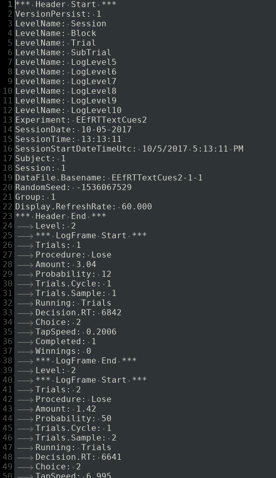

There might be an option to export your data to .csv in Eprime3 (why is this not the default?), but if you forgot to turn it on, or if you are stuck with old Eprime (.edat) data files, it might be a pain to analyse or share the data with people who don't use that proprietary software. Thankfully, there are .txt log files that are generated by default at runtime, that look like this:

Use grep() and readlines() to get that type of data into R, without having to use Eprime's solution! The following function should take all the .txt files (make sure they are ascii encoded first), find the relevant fields, and place them in one easy-to-use data.frame. Just make sure that the grep() function is looking for the correct lines first!